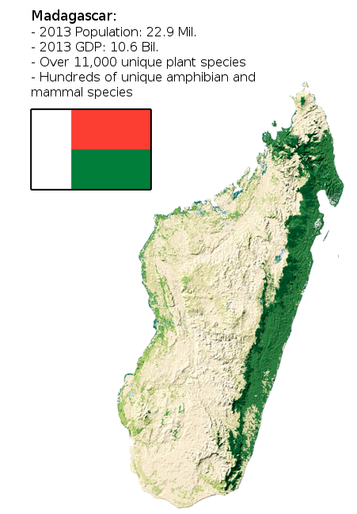
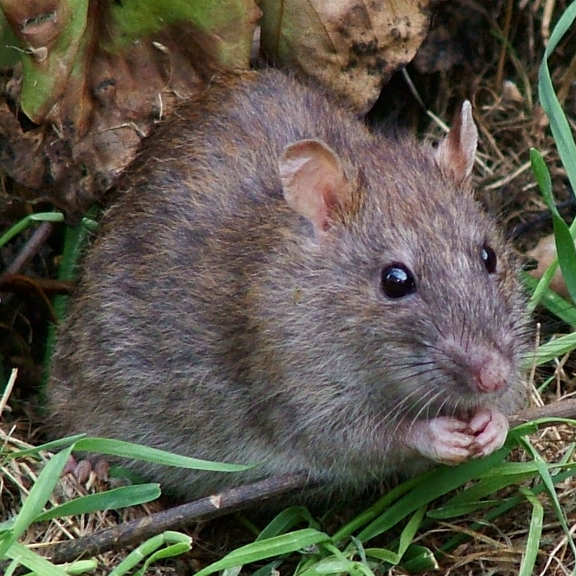

Getting to Know Madagascar's Worst Invasive Species

Chytrid (Fungus): Batrachochytrium dendrobatidis
- Chytrid attacks Madagascar's >200 unique frog species.
- Chytrid was introduced in 2010, it was likely spread by the exotic pet trade.
- Chytrid may not be easily defeated, but we can fight
- Monitoring of Chytrid and maintenence of captive populations could save Madagascar's frogs.
Wild-Sage (Plant): Lantana Camara
- Capable of displacing Madagascar's native plant species.

Ship Rat (Mammal): Rattus rattus
- Predates small birds, reptiles and mammals.
- Spreads a variety of pathogens to both humans and other species